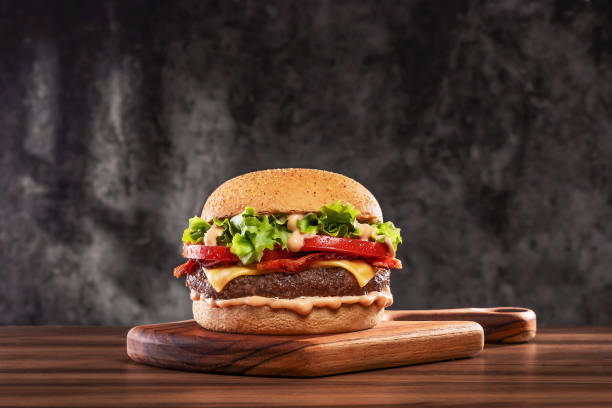

Veg-Burger

>>Description
A burger, in essence, is a versatile and adaptable dish centered around a cooked patty (whether meat or plant-based) served in a bun, with a multitude of customizable toppings and sauces to satisfy diverse palates.
>>Ingredients
- Buns
- Patty (potato-based )
- Veggies (tomatoes, Onions, lettuce....)
- Burger Sauce/Mayo
- Cheese
>>Procedure
- Prepare Veggies: Steam or boil your chosen vegetables (like potatoes, carrots, peas, beans) until fork-tender but not mushy.
- Mash and Combine: Mash the cooked vegetables, then add finely chopped aromatics (onions, garlic, ginger, green chilies) and spices (like cumin, garam masala, turmeric) to the mashed veggies.
- Add Binder: Incorporate breadcrumbs (or alternatives like poha powder, sattu, or roasted chickpea flour) into the mixture to absorb moisture and bind the patty.
- Form Patties: Divide the mixture and flatten it into patties the size of your burger buns.
- Make Batter & Coat: Prepare a slurry (e.g., using gram flour and water) and dip the patties, then coat them evenly with breadcrumbs for a crispy crust.
- Chill Patties: Refrigerate the patties for 10-20 minutes to help them firm up and hold their shape during cooking.
- Prepare Dressing & Toppings: Whisk together ingredients for your burger sauce (e.g., mayonnaise, mustard, lemon juice, spices) and slice fresh toppings like lettuce, tomatoes, and onions.
- Cook Patties: Heat oil in a pan and shallow fry the patties until golden brown and crispy on both sides. Alternatively, bake or air fry them.
- Toast Buns: Slice burger buns in half and toast them lightly on a pan or in the oven.
- Assemble & Serve: Spread dressing on the bun, add lettuce, cooked patty, toppings, and the top bun. Serve immediately.
Return to top